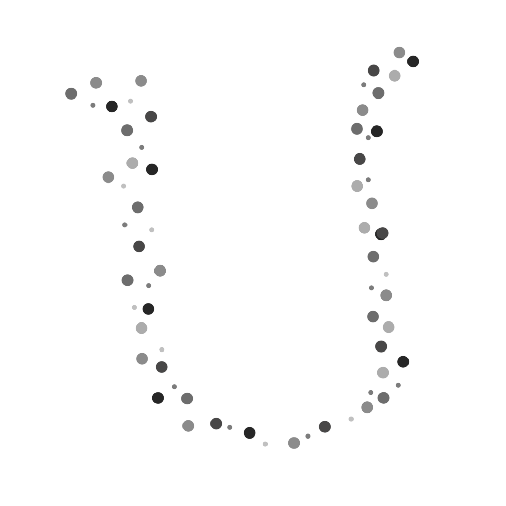

Underthebed
Fine Dining
Underthebed has some of the finest house-class dining experiences, offering a mixture of upscale and casual restaurants at affordable prices for any dust bunny.
Mrs. Thompson
Mrs. Thompson is one of Underthebed’s most upscale dining experiences. Feast on delicate orange Purr hairs freshly harvested from the eastern carpet’s edge. The chefs at Mrs. Thompson prepare the hairs in innovative and scrumptious ways you have never tasted before. Reservations recommended.
Skinny
Skinny is Underthebed’s go-to café for freshly baked dermis goodies. They have everything from dermis dust pies to flaky dermis cookies to dandruffles. A cosy, comfortable environment populated by locals, you’ll love to relax at Skinny on any visit to Underthebed.
Toxins and Germs
Toxins and Germs will satisfy any dust bunny’s hunger. This restaurant serves up hearty fare consisting bacteria, cold germs, and outside toxins like your grandma makes. Their varied menu will have anything anyone could want in a laid-back setting. A live band plays in the establishment every Tuesday and Thursday.
Wings
Look no further than Wings for your classy insect bit fine dining. Crunchy and delicate wings are this restaurant’s specially and have won the yearly insect bit food award nine years in a row. Wings offers you to try insect bits from new species while locally sourcing all of their ingredients.
()___
()//__/)_________________()
||(___)//#/_/#/_/#/_/#()/||
||----|#| |#|_|#|_|#|_|| ||
||____|_|#|_|#|_|#|_|#||/||
jgs || |#|_|#|_|#|_|#|_||
Home
